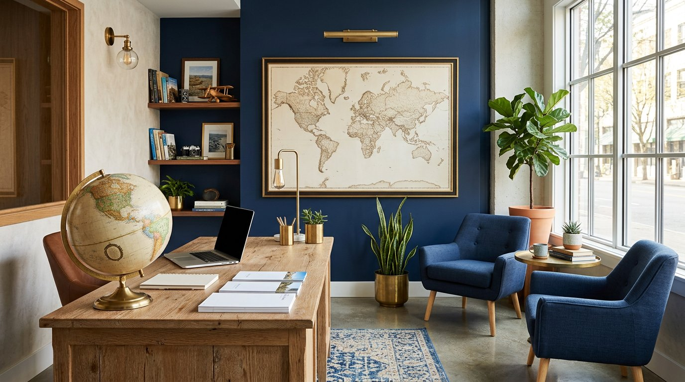

Подбор направления
Сезон, погода, визовые требования и бюджет — показываем 3–5 вариантов на ваши даты.
О компании
Принципы работы, памятка туристу и сведения о сайте
О нас
Небольшое агентство в центре Краснодара: мы не продаём «всё подряд», а подбираем поездку под конкретного человека — с его датами, бюджетом и представлением об отдыхе.
Двенадцать лет — один принцип: честный маршрут
Агентство «Меридиан» работает с 2014 года. За это время мы отправили в поездки больше шести тысяч туристов и научились главному: хороший тур начинается не с цены, а с точного вопроса — что именно вы хотите увидеть и сколько времени готовы провести в дороге. Поэтому первая консультация всегда бесплатная и занимает около получаса.
Мы работаем с проверенными туроператорами и напрямую с отелями, поэтому можем сравнить несколько вариантов на одни и те же даты. Все документы — авиабилеты, ваучер, страховка, памятка — собираются в одну папку и выдаются за три дня до вылета. Если рейс задерживается или в отеле что-то пошло не так, дежурный менеджер остаётся на связи до возвращения туриста домой.
Ваш маршрут — наша работа, ваш отдых — ваша история

Блок с классом .layer: фиксированная высота и полоса прокрутки
Памятка перед выездом.
За три дня до вылета менеджер присылает полный пакет документов: авиабилеты, ваучер на отель, страховой полис, программу тура и контакты принимающей стороны. Проверьте, что фамилия и имя в билете совпадают с загранпаспортом до последней буквы — исправить ошибку после выписки билета сложно и дорого.
В аэропорту приезжайте за три часа до вылета международного рейса: это время уходит на регистрацию, досмотр и паспортный контроль. Загранпаспорт должен быть действителен не меньше шести месяцев после даты возвращения, а страховка — покрывать весь срок поездки.
Возьмите с собой распечатку ваучера и страховки, хотя бы одну банковскую карту международной платёжной системы и небольшую сумму наличными. Лекарства, которые вы принимаете постоянно, положите в ручную кладь и сохраните рецепт — это упрощает досмотр.
Если рейс задержали, отель заменили или потерялся багаж — не решайте вопрос самостоятельно на месте: свяжитесь с дежурным менеджером агентства по телефону +7 (991) 538-02-85. Мы фиксируем обращение, связываемся с туроператором и страховой компанией и ведём вопрос до результата.
Сезон, погода, визовые требования и бюджет — показываем 3–5 вариантов на ваши даты.
Отель, перелёт и трансфер оформляются одной заявкой у проверенного туроператора.
Готовим список документов, проверяем анкеты и записываем на подачу в визовый центр.
Медицинская страховка с покрытием от 50 000 € включена в стоимость любого тура.
Подбираем экскурсии с русскоязычными гидами и индивидуальные маршруты по городам.
Дежурный менеджер на связи всё время поездки — включая выходные и праздники.
Этот сайт — практическая работа по теме «Освоение навыков использования CSS». Проект выполнен в Негосударственном аккредитованном некоммерческом частном образовательном учреждении высшего образования «Академия маркетинга и социально-информационных технологий — ИМСИТ» (г. Краснодар) студентом группы 26-ИБ-01 по специальности «Информационная безопасность».
Тематика сайта — предприятие сферы туризма: вымышленное
туристическое агентство «Меридиан» в Краснодаре. Оформление всех трёх страниц
описано в одном внешнем файле style.css, поэтому сайт выдержан
в едином деловом стиле.
| Структура проекта | Все страницы, файл стилей и папка изображений находятся в одной папке |
|---|---|
| Переходы по меню | Все ссылки главного меню открывают нужные страницы, переходы по якорям работают |
| Внешние ссылки | Вынесены в нижний блок и открываются в новой вкладке (target="_blank") |
| Единый стиль | Три страницы оформлены в одной цветовой гамме: тёмно-синий, золотой, светло-серый |
| Изображения | У всех рисунков заполнен атрибут alt, размеры заданы в пикселях |
| Браузеры | Страницы проверены в Chrome, Firefox и в режиме эмуляции мобильного экрана |
Стили CSS — это язык оформления, который отделяет внешний вид страницы от её содержания
style.css, подключённый строкой <link>.<font> и атрибутах
bgcolor, align, border: разметка становится короче
и намного понятнее..textstyle0–.textstyle4 или .layer
используются на всех страницах сайта.@media делают вёрстку адаптивной: на узком экране блоки перестраиваются
в одну колонку, а размер шрифта уменьшается, поэтому сайт удобно читать с телефона.@media print.Все перечисленные свойства CSS я применил на трёх страницах этого сайта: главной, странице туров и странице о компании.